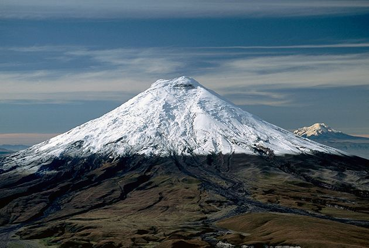
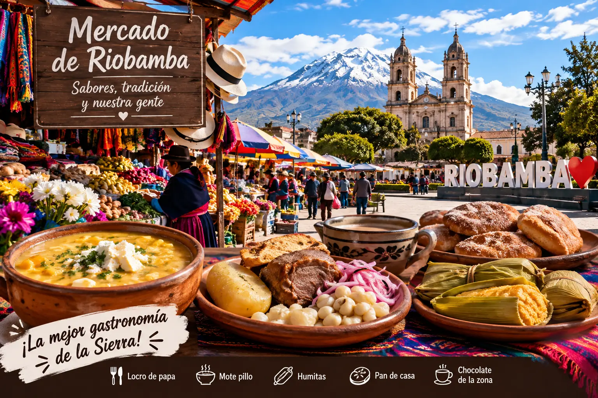

Volcán Chimborazo
El punto más alto del planeta desde el centro de la Tierra y el símbolo natural de la región.
Actividad: Trekking, fotografía y observación de paisajes andinos.

El punto más alto del planeta desde el centro de la Tierra y el símbolo natural de la región.
Actividad: Trekking, fotografía y observación de paisajes andinos.

Una experiencia auténtica para probar platos tradicionales y comprar productos artesanales de la zona.
Actividad: Degustación, compras y contacto con la cultura local.